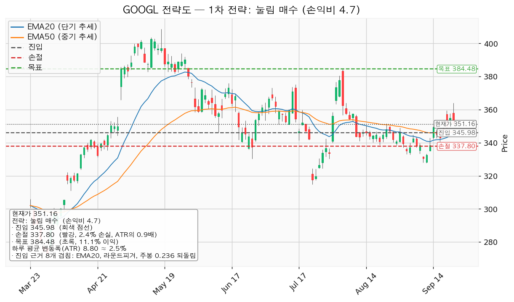
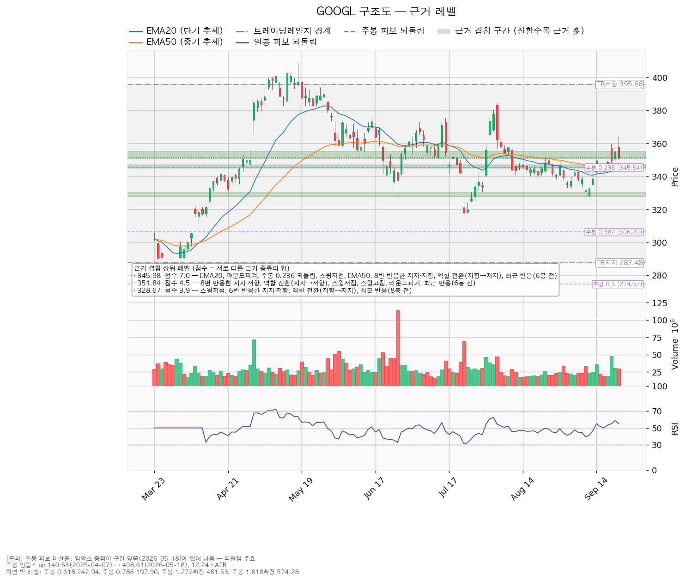
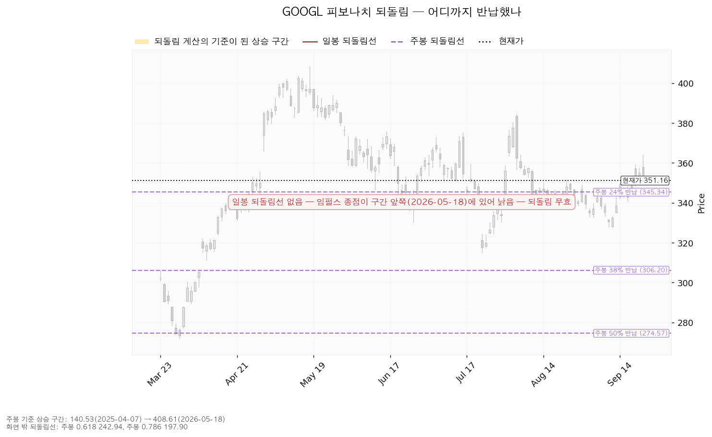
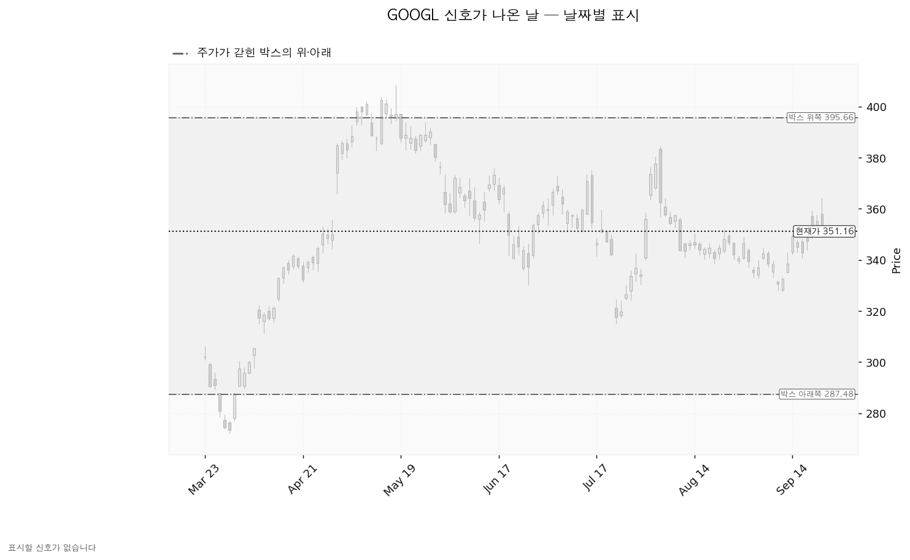

알파벳 A(GOOGL)는 구글 검색과 유튜브, 안드로이드, 구글 클라우드를 운영하는 미국 기업이며, 매출의 대부분이 광고에서 나옵니다.
| 구분 | 가격 | 판정 방식 | 현재가 대비 | 상태 |
|---|---|---|---|---|
| 회복선(진입 조건) | 345.98달러 | 되돌림으로 344.89~346.84달러 구간에 닿으면 매수 | -1.48% (0.59 ATR 아래) | 진입 대기 |
| 집행 손절 | 337.80달러 | 장중 저가 도달 — 진입한 경우에만 유효하며 미진입 상태에서는 작동하지 않습니다 | -3.80% (1.52 ATR) | 미적용 |
| 관망 종료 기준 | 327.74달러 | 일봉 종가가 이 아래로 마감 → 매수 계획 종료, 새 리포트 대기(보유분은 유지) | -6.67% (2.66 ATR) | 유지 중 |
| 확인선 | 395.66달러 | 일봉 종가 돌파 후 되돌림 지지 확인 | +12.67% (5.05 ATR) | 미돌파 |
| 폐기선(구조) | 287.48달러 | 이탈 → 3거래일 내 종가 회복 실패(또는 278.68달러 종가 이탈) → 반등이 저항으로 확인 | -18.13% (7.23 ATR) | 유지 중 |
확인선 395.66달러는 겹침 근거로 고른 상단 저항이 아니라 박스 상단 그 자체이며, 현재가에서 하루 평균 변동폭의 5.05배 위에 있어 수 주 시계에서는 맥락으로만 씁니다. 이 계획의 청산은 384.48달러입니다. 엔진이 낸 단기 회복선은 351.84달러인데, 이 계획에서는 사는 자리가 아니라 1차 청산 자리로 씁니다 — 진입 조건은 345.98달러 되돌림 하나입니다.
① 직전 트리거의 성적표. 직전은 패스였고, 회복선 341.42달러와 목표 겸 확인선 346.64달러를 2026-09-14 종가 349.39달러로 한 번에 충족했습니다. 진입하지 않았으므로 손절 319.23달러는 발동하지 않았고, 관망 종료 321.26달러와 폐기선 287.48달러는 닿지 않았습니다(그 사이 최저 종가 330.65달러, 2026-09-09). 직전 리포트가 "346.64달러를 종가로 넘으면 새 셋업으로 다시 잡는다"고 적은 그 자리가 이번 리포트입니다.
② 좌표의 이동. 2주 동안 가격이 338.46 → 351.16달러(+3.75%)로 올라 셋업 종류가 회복 매수에서 되돌림 매수로 바뀌었습니다. 진입 341.42 → 345.98달러, 손절 319.23 → 337.80달러, 목표 346.64 → 384.48달러, 손익비 1:0.23 → 1:4.70. 확인선은 346.64 → 395.66달러(박스 상단)로 올라갔고, 폐기선 287.48달러와 박스 범위는 같습니다. ATR은 8.12 → 8.80달러입니다.
③ 판단이 바뀌었습니다. 패스에서 진입 대기로 바뀐 이유는 목표까지의 거리가 5.22 → 38.50달러로 벌어지는 동안 손절 폭이 22.19 → 8.18달러로 좁아진 것입니다. 직전 리포트의 현금흐름 수치(영업 1,857억·잉여 227억 달러)는 설비투자 914억 달러와 맞지 않았습니다. 이번 자료의 1,647억·733억·914억 달러가 서로 맞는 값이며, 직전 수치를 정정합니다.
| 항목 | 내용 |
|---|---|
| 이름 | 되돌림 매수 — 롱(매수) |
| 진입 | 345.98달러 (현재가 대비 -1.48%, 되돌림 대기) |
| 진입 근거 겹침 | 7.0점 / 344.89~346.84달러 — EMA20 + EMA50 + 라운드피겨 345.00 + 주봉 0.236 되돌림 + 스윙저점 + 8번 반응한 지지·저항 + 역할 전환(저항→지지) + 최근 반응(6봉 전) |
| 손절 | 337.80달러 — 근거 겹침 구간(340.00~340.44달러, 3.3점) 바로 아래로 밀어낸 값입니다. 구간 안쪽에 두면 지지에 닿기만 해도 잘려 나가므로 아래로 뺐고, 그만큼 손절 폭이 넓어졌습니다 |
| 1차 목표 | 351.84달러 (50% 청산, 손익비 1:0.72) — 8번 반응한 가격 + 역할 전환(지지→저항) + 스윙고점 + 스윙저점 + 라운드피겨 |
| 2차 목표 | 384.48달러 (잔여 50% 청산, 손익비 1:4.70) — 2026-08-05 스윙고점 + 최근 반응(33봉 전) |
| 손익비 | 1:4.70 (손절 폭 8.18달러 = 0.93 ATR, 진입가 대비 2.36%) |
| 구조 기준 손익비 | 손절이 이미 겹침 구간 아래에 둔 구조적 손절이라 별도의 구조 기준 손익비가 산출되지 않았습니다. 표기된 1:4.70이 곧 구조 기준 값이며, 손절을 조여서 만든 숫자가 아닙니다 |
| 엣지의 종류 | 평균회귀 — "지지로 눌릴 때 산다, 되돌림이 멈추는 자리를 노린다". 승률이 높고 이익 폭이 작은 유형이며 저항에서 전량 청산이 정합적입니다(유형의 성격이고 이 엔진에서 측정한 값이 아닙니다) |
| 구조 증명도 | 선취형(구조 미확인) — 구조가 증명되기 전에 되돌림에서 먼저 잡으므로 진입가는 유리하고 실패 확률은 높습니다 |
| 청산 계획 | 351.84달러에서 50% 청산 후 잔여분 손절을 진입가 345.98달러로 올리고, 384.48달러에서 나머지 50%를 청산합니다. 전 구간 손익비 1:2.71, 1차 청산 뒤 본전 손절로 끝나면 하한 1:0.36입니다. 트레일링은 걸지 않습니다 |
| 판정 | 진입 대기 |

대표로 고른 이유는 손익비 4.7 × 구조 증명도(선취형) × 근거 겹침 7.0점이며, 상대강도·거래량으로 순위에 0.944배를 곱했습니다(지수 대비 20일 초과수익 -0.57%, 상대강도선 20일 기울기 -0.56%). 이 배수를 빼도 순서는 같아 대표 셋업이 배수 때문에 바뀌지는 않았습니다. 엔진이 낸 다른 셋업 하나는 384.48달러를 종가로 넘을 때 사는 돌파 매수(진입 근거 겹침 1.7점 — 스윙고점 + 최근 반응(33봉 전), 손절 371.27달러, 목표 395.66달러)인데 손익비가 1:0.85로 1에 못 미쳐 보류이며 이번 계획에 쓰지 않습니다.
진입 345.98달러에서 2차 목표까지는 하루 평균 변동폭의 4.37배로 2배 기준을 넘지만(이 2배는 관행이지 정설은 아닙니다), 위의 두 단계 청산 외에 트레일링은 얹지 않습니다. 395.66달러를 일봉 종가로 넘어서는 구간은 이 포지션의 연장이 아니라 새 셋업입니다. 장부에 GOOGL 체결 기록이 없어 전략도에 평단선과 체결 표시는 그려지지 않았습니다(기록이 없다는 것이 보유하지 않았다는 뜻은 아닙니다).
셋업 기준선은 진입가 345.98달러입니다.
| 단계 | 조건 | 의미 | 행동 |
|---|---|---|---|
| ① 관찰 | 일봉 종가가 345.98달러 아래로 마감 | 구조 이탈의 시작일 뿐 아직 무효가 아닙니다. 되돌아 올라오면 지지선을 잠깐 뚫고 회복하는 움직임(속임수 하락)일 수 있습니다 | 신규 진입만 중단. 집행 손절은 그대로 둡니다 |
| ② 경고 | 이탈 후 3거래일 안에 345.98달러를 종가로 회복하지 못함, 또는 그 전에 일봉 종가가 337.18달러 아래로 마감(하루 평균 변동폭 1배만큼 더 밀림) — 둘 중 먼저 오는 쪽 | 되돌림 지지 상실 가능성이 우세해집니다 | 잔여 비중 축소. 반등이 나오면 이 가격에서의 반응을 확인합니다 |
| ③ 무효 | 반등이 345.98달러에서 막히고 그 아래로 되밀림(지지가 저항으로 전환) | 셋업 폐기 — 구조 해석이 틀린 것으로 확정 | 포지션 정리, 새 구조가 만들어질 때까지 관망 |
집행 손절 337.80달러는 이 판정과 무관하게 별도로 작동하고, 장중에 잠깐 345.98달러 아래를 찍는 것은 어느 단계에도 해당하지 않습니다.
논지 무효화(가격과 별개). 폐기선 287.48달러는 현재가에서 하루 평균 변동폭의 7.23배 아래라 수 주 시계의 무효화 기준으로는 실무상 작동하지 않습니다. 대신 2026-10-29 실적에서 아래 중 하나가 확인되면 "배수가 줄어든 것일 뿐 사업은 멀쩡하다"는 이 리포트의 전제를 접습니다 — ① 내년 EPS 컨센서스 14.91달러가 90일 전 수준인 14.51달러 아래로 되돌아가는 경우 ② 영업현금흐름이 직전 1,647억 달러에서 의미 있게 줄어드는 경우 ③ 잉여현금흐름이 733억 달러에서 음수로 전환되고 설비투자 증가율이 +74.1%에서 다시 확대되는 경우.
① 상승 전환 — 351.84달러를 종가로 회복하고 지지된 뒤 395.66달러를 종가로 돌파하는 경우입니다. 구조로는 속임수 하락 확인 → 강세 신호 → 되돌림 지지 → 상승 국면의 순서입니다. 행동은 345.98달러 되돌림 매수를 유지하고 384.48달러에서 계획대로 청산하는 것이며, 395.66달러 종가 돌파 뒤의 구간은 새 리포트로 다시 잡습니다.
② 횡보 지속 — 287.48달러를 지키면서 395.66달러 아래에서 박스가 이어지는 경우입니다. 구조는 그대로 유지되며, 매물을 소화하는 데 시간이 필요한 국면입니다. 부정적인 신호가 아닙니다. 되돌림 매수 계획은 이 갈래에서도 살아 있으며, 박스 안쪽에서 다음 셋을 추적합니다 — 지지를 다시 시험할 때 매도 거래량이 줄어드는지(현재 관측: 혼조, 평균 대비 0.74~1.19배) / 박스 안 저점이 절상되는지(현재 관측: 절하, 296.25 → 302.35 → 294.08 → 300.44 → 272.11달러) / 오를 때 거래량과 캔들 폭이 커지는지(현재 관측: 상승봉 대 하락봉 거래량비 0.92).
③ 시나리오 폐기 — 287.48달러를 이탈한 뒤 3거래일 안에 종가로 회복하지 못하거나 그 전에 278.68달러 아래로 종가 마감하고, 이어진 반등이 287.48달러에서 막히는 경우입니다. 매물 소화가 아니라 상승분을 나눠 판 구간이었다는 뜻이며 추가 저점 갱신 가능성이 열립니다. 포지션을 정리하고 새 바닥과 새 박스가 만들어질 때까지 관망합니다.
| 가격대 | 겹침 점수 | 근거 | 위치 |
|---|---|---|---|
| 344.89~346.84달러 (345.98) | 7.0 | EMA20 + EMA50 + 라운드피겨 + 주봉 0.236 되돌림 + 스윙저점 + 8번 반응 + 역할 전환(저항→지지) + 최근 반응(6봉 전) | 아래 -1.48% |
| 350.76~355.00달러 (351.84) | 4.5 | 8번 반응 + 역할 전환(지지→저항) + 스윙고점 + 스윙저점 + 라운드피겨 + 최근 반응(6봉 전) | 위 +0.19% |
| 327.74~330.20달러 (328.67) | 3.9 | 6번 반응 + 역할 전환(저항→지지) + 스윙저점 + 최근 반응(8봉 전) | 아래 -6.40% |
| 313.16~314.90달러 (313.74) | 3.4 | 7번 반응 + 역할 전환(저항→지지) + 스윙저점 | 아래 |
| 340.00~340.44달러 (340.30) | 3.3 | 라운드피겨 + 7번 반응 + 역할 전환(저항→지지) + 최근 반응(12봉 전) | 아래 -3.05% |
| 384.48달러 | 1.7 | 스윙고점 + 최근 반응(33봉 전) | 위 +9.49% |

현재가 351.16달러는 350.76~355.00달러 구간 안에 있고, 이 구간은 지지였다가 저항으로 바뀐 자리입니다(2026-09-22 포함 8번 반응). 아래쪽 첫 방어선이 이번 진입 자리인 344.89~346.84달러이고, 손절 337.80달러는 그다음 구간 바로 아래입니다. 목표 384.48달러 위로는 근거가 1.7점으로 얇아 박스 상단 395.66달러까지 사이에 멈출 자리가 거의 없습니다.
박스는 287.48~395.66달러이며 40·90·180일봉 세 창 가운데 180일봉이 선택됐습니다(가격이 박스 안에 머문 비율 94.4%, 40일봉 87.5%·90일봉 87.8%). 전체 751봉을 조회해 약 9개월짜리 횡보를 본 것이고 폭은 하루 변동폭의 12.29배입니다. 가격은 직전 구간(155.08~314.53달러, 추세·확장 구간)에서 위로 올라와 이 박스에 들어왔으므로 다시 오르기 전의 매물 소화일 수도, 상승분을 나눠 파는 자리일 수도 있습니다. 박스 안쪽 관측치는 지지 테스트 거래량 혼조, 저점 절하, 상승봉 대 하락봉 거래량비 0.92로 판정은 중립이며, 매집이라고 부를 근거도 분산이라고 부를 근거도 아직 모이지 않았습니다.
일봉 기준 되돌림선은 이번에도 계산되지 않았습니다. 기준으로 삼을 상승 구간의 끝이 2026-05-18로 너무 앞쪽에 있어 지금 가격을 재는 잣대가 되지 못합니다. 그래서 되돌림선은 주봉 하나뿐이며, 2025-04-07 저점 140.53달러에서 2026-05-18 고점 408.61달러까지(하루 변동폭의 12.24배) 구간에서 23.6% 반납선이 345.34달러입니다. 이 값이 진입 겹침 7.0점의 구성 요소이고, 현재가는 고점 대비 -14.06%로 상승분의 4분의 1도 반납하지 않았습니다. 38.2% 반납선 306.20달러와 절반 반납선 274.57달러는 박스 하단 부근이거나 그 아래입니다.

날짜별 신호는 이번 구간에서 하나도 확인되지 않았습니다. 속임수 하락도, 고점을 잠깐 뚫고 밀리는 움직임도, 강세·약세 신호도 잡히지 않았습니다. 국면 후보는 미정이며 사유는 평탄한 횡보에 내부 지표까지 중립이라는 것입니다. 아래 차트에 표시할 신호일이 없는 것은 이 때문입니다.

애널리스트 54명, 투자의견은 적극 매수, 다음 실적일은 2026-10-29입니다.
(a) 배수. 후행 PER 17.64배(최근 12개월 EPS 19.91달러), 선행 PER 23.60배(내년 EPS 추정 14.91달러)입니다. 둘이 벌어진 이유는 올해 EPS 추정 20.62달러(+90.8%)에 내년까지 이어지지 않는 것으로 추정되는 부분이 들어 있고, 내년 추정이 -27.7%로 낮게 잡혀 있기 때문입니다. 어느 한쪽만 인용해 비싸다·싸다를 말할 수 없습니다.
(b) 목표주가 분포. 최저 340.00달러 / 평균 429.46달러(현재가 대비 +22.30%) / 최고 515.00달러입니다. 현재가 351.16달러는 최저 목표보다 +3.28% 위로, 54명의 목표 분포 하단 바로 위에 있습니다. 직전 리포트 시점에는 최저 목표 아래였는데 그 사이 가격이 올라 분포 안으로 들어왔습니다.
(c) 하락의 성격은 배수 수축입니다. 90일 동안 올해 EPS 컨센서스는 +45.0%, 내년은 +2.7% 상향됐습니다. 추정치가 오르는 동안 52주 고점 대비 -14.06%에 머물러 있다면 사업이 나빠진 것이 아니라 시장이 매기는 배수가 줄어든 것입니다. 다만 그 상향은 이미 끝났습니다 — 최근 30일 변화는 올해 +0.1%, 내년 +0.5%로 멈춰 있습니다. 10월 29일 실적 외에 재평가 계기로 댈 만한 것을 이 자료에서 찾지 못했고, 그만큼 대기 기간을 수 주로 잡는 근거가 약합니다.
(d) 현금흐름은 적자가 아닙니다. 2025-12-31 결산 기준 영업현금흐름 +1,647억 달러, 잉여현금흐름 +733억 달러로 둘 다 양수입니다. 설비투자가 525억 → 914억 달러(+74.1%)로 늘며 잉여현금흐름이 얇아진 것이고, 영업 단계에서 현금이 빠져나가는 것과는 성격이 다릅니다. 확인 항목은 이 투자가 이익으로 돌아오는 속도입니다.
(e) 상승 여력 분해. 평균 목표 429.46달러를 내년 EPS 14.91달러로 나누면 내재 배수 28.81배로 현재 선행 23.60배보다 높고, 이 계획의 목표 384.48달러도 내재 25.79배로 현재보다 위입니다. 두 목표 모두 상승분이 이익 증가가 아니라 배수 확장에 기대고 있습니다. 최저 목표 340.00달러의 내재 배수 22.81배만이 현재 수준과 비슷합니다. 컨센서스는 12개월 시계, 이 셋업은 수 주 시계이므로 결론이 갈려도 모순이 아닙니다.
| 날짜 | 이벤트 | 볼 수치 |
|---|---|---|
| 2026-10-29 | 3분기 실적 발표 | ① 내년 EPS 컨센서스 14.91달러가 유지·상향되는지(90일 전 14.51달러) ② 설비투자 규모(직전 914억 달러, +74.1%)와 가이던스 ③ 잉여현금흐름이 양수(직전 +733억 달러)를 유지하는지 |
날짜가 확정된 확인 이벤트는 위 하나이며, 다음 실적 이후 2~3개 분기에 알려진 역풍은 확인할 자료가 없습니다. 컨센서스 수치로 추론해 적지 않습니다.
손절 폭이 진입가 대비 2.36%이므로 1회 매매 손실을 계좌의 1%로 잡으면 비중이 계좌의 42.3%가 됩니다. 한 종목에 13%를 넘기지 않는다는 한도에 걸려 13%로 제한하며, 계좌 139,498,400원 기준 18,041,300원(계좌의 12.93%), 진입가 345.98달러로 38주입니다. 이때 손절까지의 손실은 426,550원으로 계좌의 0.31%이며, 비중을 줄인 만큼 1% 한도에는 미치지 않습니다.
도구 적합성은 한 가지가 걸립니다. ATR 8.80달러는 주가의 2.51%로 크지 않지만, 손절 폭 0.93 ATR은 하루 평균 변동폭보다 좁습니다. 되돌림 매수의 논지가 맞더라도 하루치 움직임만으로 337.80달러에 닿을 수 있다는 뜻이며, 비중이 이미 계좌의 0.31% 리스크로 눌려 있으므로 추가 축소 없이 그대로 집행합니다.
조건 점검은 5/9 통과이고 미달은 이동평균 정배열 · 지수 대비 20일 초과수익 · 상대강도선 신고가 · 거래량 강도 넷이며, 재지 못한 항목은 없습니다. 네 항목 모두 지수를 앞서지 못하고 파는 쪽이 아직 남아 있다는 같은 방향을 가리키므로, 이 계획은 주도주를 사는 것이 아니라 박스 안에서 지지 가격대를 사는 것입니다. 그 전제 위에서 손익비 1:4.70(손절 폭 0.93 ATR)이면 집행할 값이고, 판정은 345.98달러 되돌림 대기입니다.
일봉 되돌림선은 기준 상승 구간이 낡아 산출되지 않았고(주봉만 사용), 이번 구간의 신호일은 없으며 국면 후보는 미정입니다. 장부에 GOOGL 체결 기록이 없어 전략도에 평단선이 그려지지 않았습니다. 직전 리포트의 현금흐름 수치는 위 ③에서 정정했습니다.
ATR: 하루에 평균 몇 달러가 움직이는지. EMA20/EMA50: 최근 20일·50일 평균 가격선. RSI(14): 최근 14일간 오른 폭과 내린 폭의 비율(0~100), 현재 55.3. PER: 주가를 주당순이익으로 나눈 배수. EPS: 주당순이익. 손익비: 손절까지의 손실 1에 대해 목표까지의 이익이 몇인지.